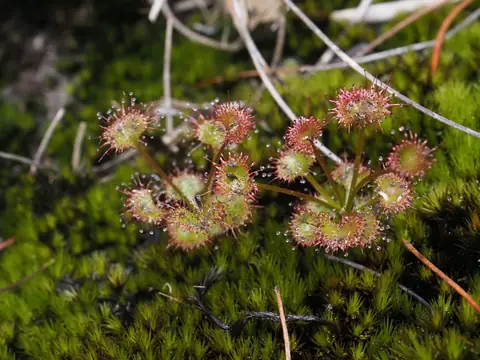
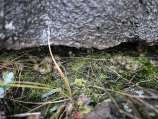

Drosera monticola



- Genus
- Drosera (sundews), family Droseraceae
- Subgenus
- Ergaleium
- Section
- Stolonifera
Original description
First described in 1992 as Drosera stolonifera subsp. monticola:
Drosera stolonifera subsp. monticola Lowrie & N.G.Marchant, Nuytsia 8(3): 326 (1992).
Read the original page (Biodiversity Heritage Library) · IPNI record
Given its current name and rank in 2005:
Drosera monticola (Lowrie & N.G.Marchant) Lowrie, Nuytsia 15(3): 365. 2005 [16 Dec 2005]
Read the original page (Biodiversity Heritage Library) · IPNI record
Range given in the IPNI record of that publication: Western Australia.
How well the identifier knows it
Of 11 validation photos of Drosera monticola (photos the model never trained on), its top guess was right for 8. It gave a confident answer for 7 of them, and 6 of those were right.
Only 23 training photos: species with fewer than 40 are identified less reliably.
Most often mistaken for
- Drosera aberrans (1 photo)
- Drosera tubaestylis (1 photo)
- Drosera pygmaea (1 photo)
Learn more
- iNaturalist: observations and range map
- Wikipedia